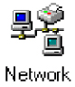

Operating Documentation
Direction 5133315-3, Rev# 14
Module Version 1.0, Version Date 5/15/07
Operating Documentation |
The Signa Horizon LX utilizes one keyboard shared between the SGI host computer and the PC system. To switch control of the keyboard and mouse from the host to the PC or back again toggle the system select switch found on the keyboard.
Below is shown the standard Signa Horizon LX PC front panel with drive locations and power and reset controls.
Look at your Windows 95 CD-ROM. If it is labeled Windows 95 Upgrade, proceed with Step 1. Look at the Windows 95 manual. On the front cover is your product ID. If it has “OEM” in the ID number, proceed with Step 2.
For Windows 95 Upgrade
Switch the system keyboard control to the PC subsystem. Insert the PC boot floppy into the PC’s 3.5 inch floppy drive and then insert the Windows 95 CD ROM into the PC’s CD ROM drive. Press the reset button on the PC. The PC boots from the floppy and stops at the PC load from cold menu.
The first function to be performed is option “A - Run Fdisk”.
The PC load from cold menu appears again. To perform the setup of software, choose option [B]. The following message appears (type Y to continue):
Type Y to the question “Proceed with format?” and press <Enter>.
The computer now begins installing Windows 95. A message appears stating that the directory C:\Windows already exists. When asked if you want to continue, click on [Yes]. When the load is complete the system reboots and reenters the PC load from cold menu. At this time type X to exit to DOS. Remove both the CD ROM and the floppy disk. Store both in a safe location. Reboot the PC by pressing <CTRL>-<ALT>-<DELETE> on the keyboard.
The computer reboots into Microsoft Windows 95. As it reboots, it asks for a user name and password. Enter the username of sdc, leaving the password blank, click on [OK]. The computer will then want to verify the password. Make sure both lines are blank and click on [OK] again. The computer finalizes the first part of the installation and reboots itself.
After the computer restarts, click on the [Close] button to close the “Welcome to Windows 95” screen.
Click on Start/Settings/Control Panel. Now double-click on [Add New Hardware]. Click on [Next], [Next], and [Next] again. The computer searches for new hardware. This may take about 5 to 10 minutes. When the computer finishes, click on [Finish]. When prompted to restart the computer, click on [Yes].
When the computer reboots, a message asks if you want to continue to receive DHCP error messages. Click on [No]. The next window to display is the Welcome to Windows 95 screen. Click on the by “Show this Welcome Screen” to clear the check-box. Click on the [Close] button on the Welcome screen to close it.
The Control Panel window should still be showing. Double-click on [System]. Under the Device Manager tab in the System Properties window, look for Display Adapters. Click on the preceding [+]. Click on [ATI VGA Wonder] and click on [Remove] and [OK]. The computer prompt you to restart. Click on [Yes].
As the computer reboots, it identifies the additional hardware. First is the PCI VGA Compatible Display Adapter. Put the Signa Horizon LX PC Software in the computer. As the New Hardware Found Wizard appears, click on [OK], in the path edit window type d:\ati_drv and [OK] again. The computer will need to restart. Click on [Yes] to restart.
After the computer restarts, click on the by “Show this screen...” to clear the check-box on the ATI Desktop Help window. Click on the [X] button in the upper right corner of the ATI Desktop Help window to close it. Close the Control Panel window by clicking on the [X] button in the upper right corner of the Control Panel window.
For Windows 95 OEM Version
Switch the system keyboard control to the PC subsystem. Insert the PC boot floppy into the PC’s 3.5 inch floppy drive and then insert the Windows 95 CD ROM into the PC’s CD ROM drive. Press the reset button on the PC. The PC boots from the floppy and stops at the PC load from cold menu.
The first function to be performed is option “A - Run Fdisk”.
The PC load from cold menu appears again. To perform the setup of software, choose option [B]. The following message will appear (type Y to continue):
Type Y to the question “Proceed with format?” and press <Enter>.
The computer begins installing Windows 95. A message appears stating that the directory C:\Windows already exists. When asked if you want to continue, click on [Yes]. When the PC asks for the OEM number to be reentered, click on [Reenter] and type in the OEM number found with the Windows 95 Certificate of Authenticity and click on [Next]. When the load is complete the system reboots and reenters the PC load from cold menu. At this time type X to exit to DOS. Remove both the CD ROM and the disk. Store both in a safe location. Reboot the PC by pressing <CTRL>-<ALT>-<DELETE> on the keyboard.
The computer reboots into Microsoft Windows 95. As it reboots, the computer asks for a user name and password. Enter the username of sdc, leaving the password blank, click on [OK]. The computer will then want to verify the password. Make sure both lines are blank and click on [OK] again. The computer finalizes the first part of the installation and reboots itself.
After the computer restarts, click on the [Close] button to close the “Welcome to Windows 95” screen. Click on Start/Settings/Control Panel. Now double-click on [System].
Under the Device Manager tab in the System Properties window, look for Display Adapters. Click on the preceding [+]. Click on [Standard PCI Graphics Adapter] and click on [Remove] and [OK]. The computer prompt you to restart. Click on [Yes].
As the computer reboots, it identifies the additional hardware. First is the Standard PCI Graphics Adapter. Put the Signa Horizon LX PC Software Cdrom in the computer. As the Update Device Driver Wizard appears, click on [Next]. Click on [Other Locations], type in the path of D:\Video and click [OK]. The computer identifies the updated driver (STB Velocity 128 (TV support)). Click on [Finish]. Next, you are prompted for a disk. Click on [OK] to acknowledge the message, enter the path D:\Video, click on [OK]. The computer will need to restart. Click on [Yes] to restart.
After the computer restarts, the first window to display is the Welcome to Windows 95 screen. Click on the by Show this Welcome Screen to clear the check-box. Click on the [Close] button on the Welcome screen to close it. The Control Panel window should still be showing. Double-click on [System]. Under the Device Manager tab, click on the [+] preceding Other Devices. Click on [OPL3-SA3 Snd System], click on [Remove], and click on [OK]. Restart the computer by clicking on [Start]/[Shutdown]/[Restart the computer]/[Yes].
As the computer restarts, it identifies the audio system. As the Update Device Driver Wizard appears, click on [Next]. Click on [Other Locations], type in the path of D:\Audio and click [OK]. The Update Device Driver Wizard identifies the audio system (Yamaha OPL3-SAX) and prompts you to click on [Finish] to complete the setup. You are then prompted for disk 1. Click on [OK] to acknowledge the message, type in D:\Audio for the path, and click on [OK]. You are then prompted for the Windows 95 CD ROM. Click on [OK] to acknowledge the message, enter the path of C:\WIN95, and click on [OK].
The Control Panel window should still be showing. Double-click on [System]. Under the Device Manager tab, click on the [+] preceding Other Devices. Click on [PCI Ethernet Controller], click on [Remove], and click on [OK]. Restart the computer by clicking on [Start]/[Shutdown]/[Restart the computer]/[Yes].
As the computer restarts, the Update Device Driver Wizard identifyies the network card. Click on [Next]. Click on [Other Locations], type in the path of D:\Network and click on [OK]. The Update Device Driver Wizard identifies the network card (3Com Fast Etherlink XL 10/100Mb TX Ethernet Adapter) and prompts you to click on [Finish] to complete the setup. You are then prompted for disk 2. Leave the cdrom in and click on [OK] to acknowledge the message, enter the path D:\Network, and click on [OK]. The computer then asks for the Windows 95 CD ROM. Click on [OK] to acknowledge the message, enter the path C:\WIN95, and click on [OK]. A message will ask if you want to continue to receive future DHCP messages. Click on [No]. Close the Control Panel window by clicking on the [X] in the upper right corner of the window.
This section explains how to load Signa applications and drivers to the PC’s hard drive.
With the Signa Horizon LX PC Software CD-ROM still in the PC, move the system cursor down to [Start] button and single click. Choose the [Run] option with a single click.
In the Open dialog box type: D:\geapps\setup.exe Click the [OK] Button to start the Install. A dialog box will appear. Chose the [Next] button. The entire load takes about 2 minutes to complete.
A pop-up window appears labeled: “Sentinel Driver Setup Program”. In the left corner of the window is the [Functions] menu item. Use the system cursor and left mouse button to select [Functions] and then the [Install Sentinel Driver] option. Another pop-up window appears, asking for the location of the driver.
In the edit box type: c:\key_drv then push the [OK] button. The Installation takes < 1 second.
When done, the program informs you that the driver has been installed. Click [OK] to acknowledge the message. At this point, exit the program by clicking on [Functions] and [Quit], remove the CD from the computer and reboot the computer by clicking on [Yes, I want to restart my computer now] and [Finish].
You must now configure the Sentinel driver. Before configuration can begin, minimize the Scantime window by clicking on the minimize button in the upper right corner of the Scantime window. (Minimize button )
Click on [Start] | [Run], type C:\Windows\System\Rnbosent\Sentw95.exe and click on [OK]. Click on [Functions] and [Configure driver]. Select LPT2 (physical address of 278) and click on [Edit]. Click on [No] to the question “Use this port?” and click on [OK]. Click on [OK] to the Sentinel driver window when it asks if the user wants to continue. Click on [OK] again. Finally click on [OK] to the message about needing to restart the computer. Quit the program by using the system cursor and left mouse button to select [Functions] and then the [Quit] option. Restart the computer by clicking on [Start] | [Shutdown] | [Restart computer] | [Yes].
The following configurations are necessary to make sure that the PC subsystem will be able to communicate with the Signa host computer.
Accessing Configuration Controls
Keyboard Setting
Network Configuration
Locate and open the [Network] icon by double clicking
with the left mouse button. 
At the main Network box, select the [TCP/IP - 3Com…….] entry and select the [Properties] button.
Select the [IP Address] tab. Make sure the “Specify an IP Address” is selected. Enter the IP address that will be used for the system PC. For Subnet Mask enter; 255.255.255.0 (or site Netmask) . Select the [OK] button at the bottom of the “Properties” page, then the [OK] button at the bottom of the “Network” page. Close Control Panel by clicking on the [X] in the upper right corner of the window. Select [YES] to reboot the PC for changes to take effect.
LCD Screen Resolution
Setting PC Local Host File
To configure the local network host file select the Task Bar [Start] button. Move up and select [Programs] then [Accessories] then over to [NotePad]. The NotePad text editor will start. In NotePad, select [File] then [Open].
Change the “File of type” box to “All Files(*.*)” .
In the “File Name” box type:
The host file will now open. Add the following new entries at the bottom of the host file.
In NotePad, select [File] then [Save] and [File] then [Exit] Note Pad.
The Wavetime tool which is used to keep track of scan times as well as patient gating information and the Service Key dialog box, are multi-language application. The Service Key application also allows messages and information to be set. The default base language for the PC tools is English. It will not be necessary to complete this task unless some other language is desired. If English is the desired language, then proceed to Step 2
Setting Wavetime base language
Go to Windows 95 task bar and select the [Start] button.
Select [Programs] then [GE Medical Systems], then [Set Language] option. The [Main Menu] program is displayed
Type: L<Enter> to set the base language for the applications. The “Language Menu” is displayed:
Select the letter of the language desired for the system being configured. Example: e<Enter> (This would set English as the primary language.)
The program then prompts for verification of the selection. “You have selected (*language chosen*) language [Y/N]”
If correct type: y<Enter> to except the change or n<Enter> to return to the selection menu.
Setting Messages In Service Key Dialog Box